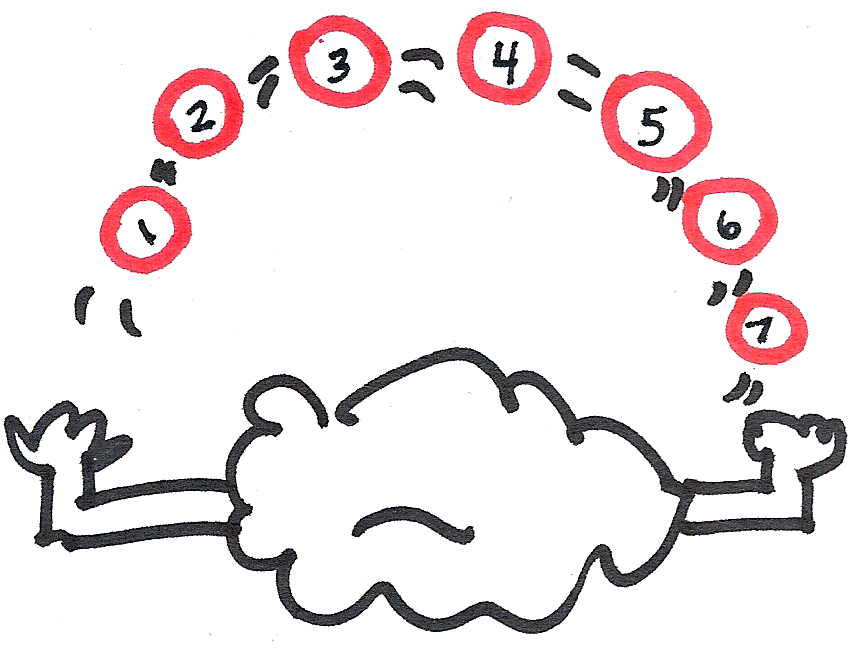
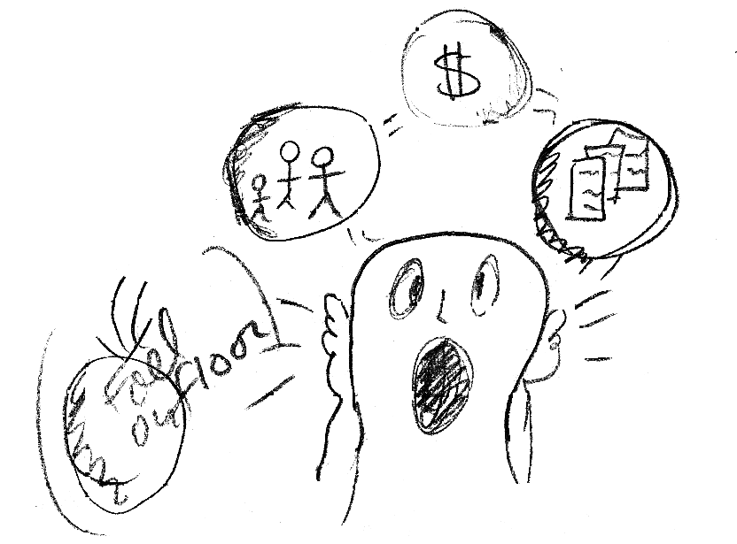

Short term Attention-getters and Long term Brand management
How do we get users' attention in the short-term and maintain our brand in the long-term? Read these summaries from chapters 5 and 6 of Medina's book, "Brain Rules" for ideas on how these concepts are relevant to the web development, IA and UX fields.
Chapter 5: Short-Term Memory
Nondeclarative memories, such as the motor skills we often use when clicking around a web site, cannot be experienced in our conscious awareness. So, we should be designing more for unconscious perceptual attributes.
However, in conscious/declarative memory, the first few seconds is crucial in determining whether something that is initially perceived will also be remembered.
Short-term memory, now called Working Memory, is a collection of temporary memory capacities, each of which specializes in processing a specific type of information. Our short term memory seems to have different channels and storage spaces for different types of information, such as: visual, movement, auditory, textual, etc. It is a busy, temporary workspace, a desktop the brain uses to process newly-acquired information. For a summary of Baddeley's working memory model, see Eysenck's overview of memory. What's important about these capacities is that they have limits, both on their duration and how much they'll hold. If the information not transformed into a more durable form, it will soon disappear.
One can increase the life span of a memory simply by repeating the information in timed intervals. Other ways we can, perhaps, increase the memorability of our websites and brand:
- The more elaborately/deeply we encode information at the moment of learning, the stronger the memory. It becomes more memorable if it has more meaning, complexity, if we personalize it.
- We remember better if we experience the same/similar conditions (environment, mood, etc.) that surrounded the initial memory formation while we're attempting to recall it.
Take advantage of how short-term memory works:
- Understand the meaning of the information (don't just memorize by rote).
This is a call for simple, clear choice of language when creating labels, as opposed to marketese. - Use relevant, real-world examples (meaningful experiences) to take advantage of the brain's natural prediliction for pattern matching (immediately associated with info already present in learner's brain).
Designers and content strategists are encouraged to use "the familiar" in their designs and content, as it lessens the cognitive load for users. - Use compelling introductions.
Bbecause the first few moments of learning are key and those first events shape how you store that memory. - Use familiar settings.
For instance, study orally for an oral exam. See #2 for a better IA example.
Chapter 6: Long-Term Memory
A typical brain's working memory can only hold about SEVEN pieces of information, for less than 30 seconds.
Reconstructive retrieval (i.e. older memories) is inherently less stable than the more immediate reproductive retrieval. In reconstructive retrieval, the brain may add false information to a memory trace in order to make a coherent story (i.e. out of the desire to create organization out of a bewildering world). This false memory gets incorporated into previously-existing representations, leaving us with only an approximate view of reality. This means that, yes, you can change your customer's mind about you, after the fact.
To fix memory, the brain needs repetition at specifically-timed intervals. Cramming, or maintenance rehearsal, keeps things in working memory and is only good for a short period of time.
On the other hand, elaborative rehearsal, or thinking or talking about an event immediately after it has occurred or a consistent re-exposure to basic facts, followed by a detailed elaboration of our impresssions, is the most effective for consolidating a memory for the long-term. This is the kind of positive brand memory you want to encourage. Given how much more a user's engagement with an event or website affects their long-term memory, an experience that is more interactive and perhaps even includes social or conversational elements, will likely help them better remember you.

On the flip side, any sort of interference (behavioral, environmental, emotional, pharmacological, genetic, etc.) can reshape and wear away previously existing memories and cause your customer to forget. Forgetting has a positive function, it allows us to prioritize events (those critical to our survival) and not waste cognitive space. However, if you don't want your customer to forget, you must do the following:
- re-expose
- more elaborately
- in fixed, spaced intervals (although researchers don't yet know the exact intervals which are most effective)
Medina suggests market research could fruitfully inquire about what timing in re-exposure most encourages people to remember your product 6 months or a year later. He also, as a utopian thought experiment, suggests a radically-different model for education which leverages the way we actually learn and remember.
Bibliography
Medina, John. (2008). Brain rules: 12 principles for surviving and thriving at work, home, and school. Seattle, Wash: Pear Press.